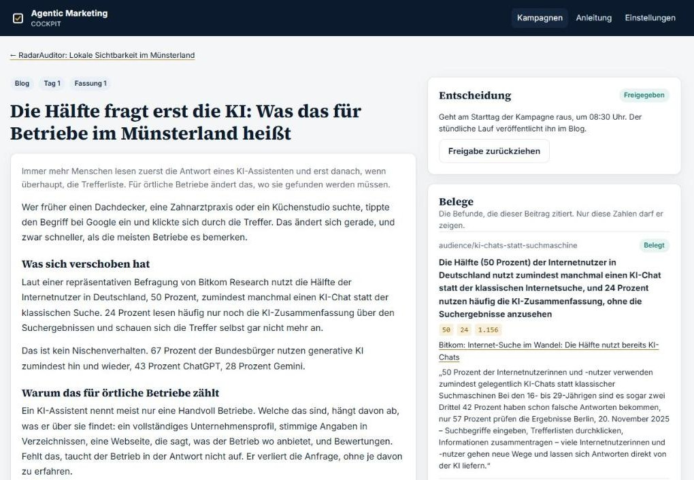
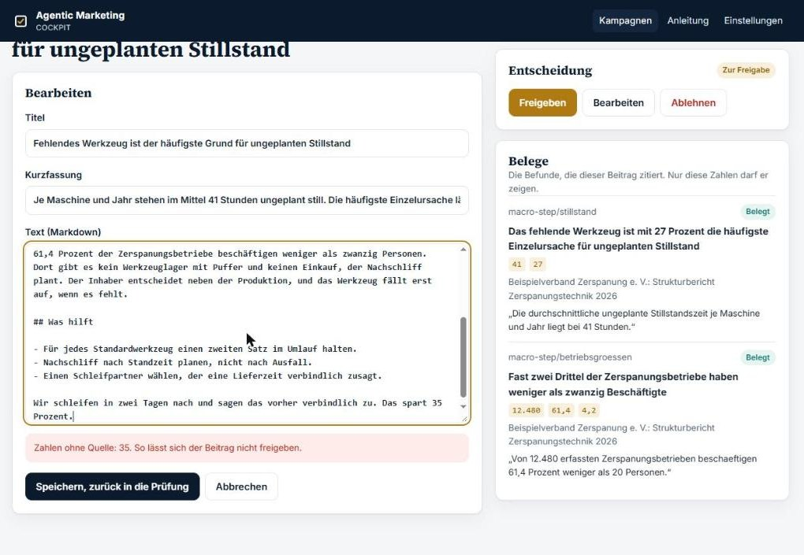
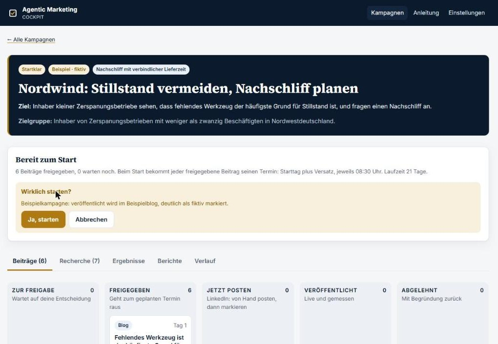
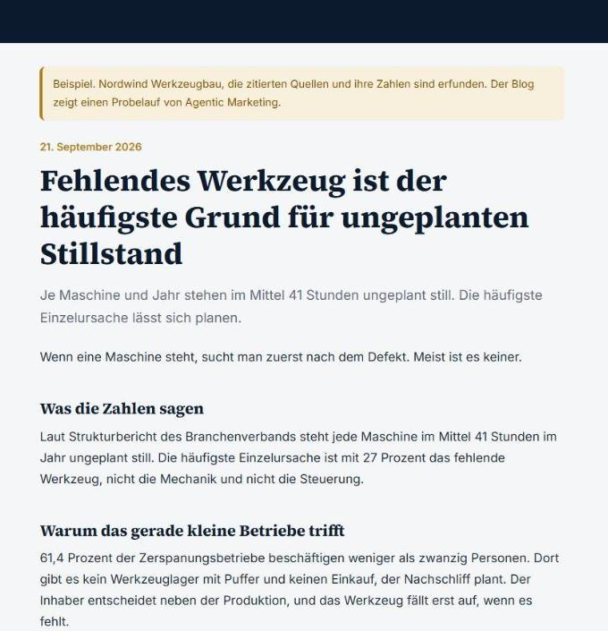
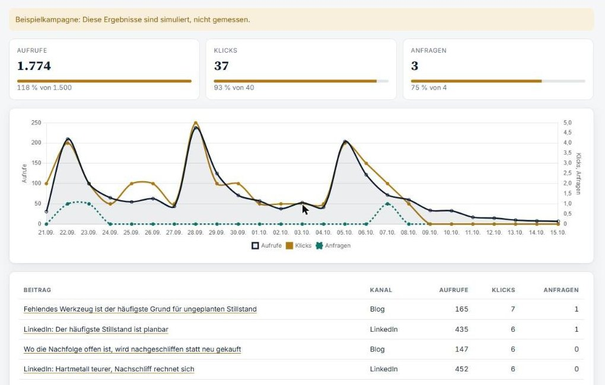
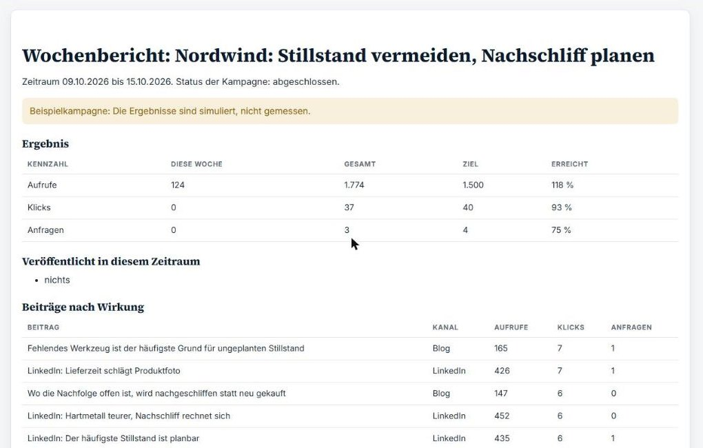
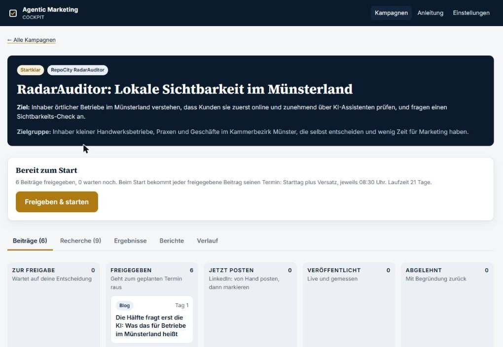

Von der geprüften Recherche zur laufenden Kampagne
KI-Agenten recherchieren und schreiben. Jede Zahl wird gegen ihre Quelle geprüft. Ein Mensch gibt im Cockpit frei und startet. Veröffentlicht und gemessen wird automatisch.
Daniel Hütte · AI Engineer · Münster
Eine erfundene Zahl liest sich genau wie eine echte
Sprachmodelle liefern Zahlen mit großer Sicherheit. Im Marketing landet eine falsche Zahl nicht in einem Test, sondern in der Öffentlichkeit, mit Ihrem Namen darunter.
„50 Prozent nutzen zumindest manchmal einen KI-Chat statt der Internetsuche.“
Bitkom Research, November 2025. Steht so auf der Seite, im Cockpit mit Zitat hinterlegt.
„Das spart 35 Prozent.“
Klingt plausibel, steht nirgends. Im Testlauf nachträglich in einen Beitrag geschrieben: Die Freigabe war sofort gesperrt.
Recherche allein ist kein Marketing
Die meisten Agenten-Aufbauten enden bei einem guten Dokument. Dazwischen und danach fehlt, was ein Marketingteam täglich braucht:
Wer gibt frei?
Ein Ort, an dem ein Mensch jeden Beitrag mit seinen Belegen sieht und entscheidet, nachvollziehbar mit Verlauf.
Wann geht was raus?
Ein Plan, der erst mit dem Startklick Termine bekommt, und ein Ablauf, der pünktlich veröffentlicht.
Was hat es gebracht?
Aufrufe, Klicks und Anfragen je Beitrag, gegen ein Ziel, das vor dem Start feststand.
Was kostet der Betrieb?
Keine Lizenz je Ausführung, keine zusätzliche Plattform: Datenbank, Zeitplan und Hosting im kostenlosen Rahmen.
Sechs Schritte, ein Tor: raus geht nur, was belegt und freigegeben ist
Recherche
Agenten schreiben Befunde mit Zahl und Quelle.
Prüfung
Jede Zahl wird in ihrer Quelle nachgeschlagen.
Kampagne
Beiträge zitieren nur behaltene Befunde.
Freigabe
Ein Mensch entscheidet im Cockpit und startet.
Veröffentlichung
Stündlich in den Blog, LinkedIn von Hand.
Messung
Täglich gezählt, montags berichtet.
Die Agenten arbeiten zu. Die Entscheidung bleibt beim Menschen.
16 von 16 Prüffällen gegen das Statistische Bundesamt richtig eingestuft
Zahlenabgleich, ohne Modell und Kosten
mit Modellstufe für umgedrehte Aussagen
unbelegte Befunde übersehen
Befunde der echten Kampagne gegen Live-Quellen belegt
Echte Sätze von Destatis-Seiten, gezielt verändert: andere Schreibweise, Ziffer geändert, Zahl erfunden, Aussage umgedreht. Die RadarAuditor-Befunde stammen von Bitkom, ZDH, HWK Münster, Bundesnetzagentur und YouGov.
Jeder Beitrag zeigt neben dem Text seine Belege
- Links der Beitrag, wie Lesende ihn sehen.
- Rechts jeder zitierte Befund: Zahlen, Quelle mit Datum, der Satz aus der Quelle.
- Freigeben, bearbeiten, ablehnen mit Begründung. Jede Handlung im Verlauf.
- Installierbar als App auf Rechner und Telefon.


Eine Zahl ohne Beleg sperrt die Freigabe, dreifach
Bei der Übergabe
Die Kampagne meldet jeden Beitrag mit unbelegter Zahl.
Beim Tippen
Die App prüft jede Änderung sofort und sperrt den Knopf.
In der Datenbank
Ein Trigger verweigert die Freigabe auch an der App vorbei, im Test sogar mit dem Service-Schlüssel.
„Freigeben & starten“ setzt den ganzen Plan
- Jeder freigegebene Beitrag bekommt seinen Termin: Starttag plus Versatz, feste Uhrzeit.
- Eine Kampagne kann Wochen vorher fertig sein. Kein Datum muss angepasst werden.
- Pausieren hebt alle Termine auf, Fortsetzen plant neu.


Der Blog füllt sich von selbst, LinkedIn bleibt in Ihrer Hand
Blog
Stündlich prüft ein Ablauf auf GitHub, was fällig ist, und schreibt Beitrag, Übersicht und Feed in einem Commit. Jeder Beitrag endet mit seinen Quellen.
Zum Termin steht der Beitrag unter „Jetzt posten“: kopieren, posten, Adresse eintragen. Kein Konto wird automatisiert.
Messbar
Links tragen Kampagnenparameter. Ein Zähler ohne Cookies ordnet jeden Klick dem Beitrag zu, der ihn ausgelöst hat.
Umkehrbar
Jede Veröffentlichung ist ein Commit: nachvollziehbar, rückgängig zu machen, die Seite bleibt statisch.
Nordwind: 6 Beiträge, 21 Tage, ein Ziel übertroffen, zwei verfehlt
Firma und Quellen erfunden, Ergebnisse simuliert und überall so markiert. Echt sind Cockpit, Freigaben, ein vom Wächter gestoppter und ein abgelehnter Beitrag, die drei veröffentlichten Blogbeiträge und die Berichte. Der Lauf wurde mit simulierter Uhr durchgespielt, mit demselben Code wie im Echtbetrieb.


Ein Bericht, der Wirkung gegen Ziel stellt
- Diese Woche, gesamt, Ziel, Anteil erreicht.
- Was veröffentlicht wurde und welche Beiträge am meisten gebracht haben.
- Was noch auf Freigabe wartet.
- Täglich gezählt, ohne Cookies, ohne Einwilligungsbanner.
Die echte Kampagne für RadarAuditor wartet auf einen Klick
Lokale Sichtbarkeit im Münsterland. Neun Befunde, alle gegen die Live-Quelle geprüft, zum Beispiel:
Sechs Beiträge freigegeben, Blog bereit. Gestartet wird, wenn das Produkt verkauft werden kann.

Drei Wochen, drei Themen, je ein Blogbeitrag und ein LinkedIn-Beitrag
| Tag | Kanal | Beitrag |
|---|---|---|
| 1 | Blog | Die Hälfte fragt erst die KI |
| 3 | Die Hälfte fragt erst die KI | |
| 8 | Blog | Sterne entscheiden mit |
| 10 | Sterne entscheiden mit | |
| 15 | Blog | Geprüft wird online |
| 17 | Auch Empfehlungen werden online geprüft |
Ziele
600 Aufrufe, 40 Klicks, 3 Anfragen. Vorher festgelegt, im Bericht nachgehalten.
Zielgruppe
Inhaber kleiner Handwerksbetriebe, Praxen und Geschäfte im Kammerbezirk Münster.
Ton
Nachgemessen, ruhig erklärt, keine Angstmache. Jede Zahl mit Quelle unter dem Beitrag.
Läuft ohne zusätzliche Plattform und ohne Kosten je Ausführung
Zeitplan: GitHub Actions
Stündlich veröffentlichen, täglich messen, montags berichten. Versioniert und prüfbar statt n8n, Zapier oder Make.
Daten: Supabase
Freigaben, Termine, Zählungen. Zeilenrechte: nur der Betreiber entscheidet, die Seiten können nur zählen.
Seiten: Cloudflare Pages
Cockpit, Blogs und Projektseite. Jeder Push rollt aus.
Geprüft
Strenge Typprüfung, automatische Tests bei jedem Push, Ende-zu-Ende im Browser durchgespielt.
Was die Prüfung an Arbeitszeit spart
Alle Werte sind Annahmen – tragen Sie Ihre eigenen ein. Die Zahlenprüfung kostet nichts; die Modellstufe läuft nur über das, was offen bleibt.
Eine Pilotkampagne mit Ihrem Thema
Recherche
Ein Markt, eine Zielgruppe, geprüfte Befunde.
Kampagne
Beiträge, Plan, Ziele. Sie geben frei.
Ergebnis
Drei Wochen später: Wirkung gegen Ziel.
Daniel Hütte · AI Engineer · Münster
app.agenticmarketing.speedofthespirit.dev
github.com/DanielHuette/agentic-marketing